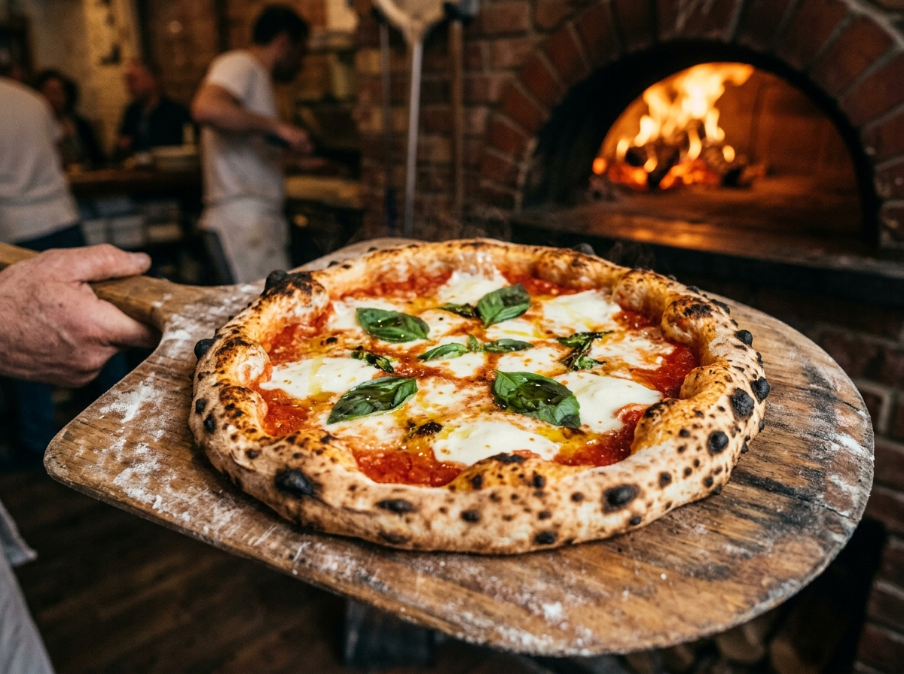

Neapolitan Pizza

Description
The absolute gold standard of Italian pizzas. A light, airy, and blistered wood-fired crust topped with vibrant, simple San Marzano tomato sauce, fresh pools of creamy buffalo mozzarella, green fragrant basil leaves, and a fine drizzle of extra virgin olive oil.
This authentic Italian recipe focuses on high quality, simple ingredients and proper dough fermentation to achieve an incredibly flavorful, soft crust that is characteristic of Naples.
Ingredients
- Tipo "00" flour500g
- Water (room temp)325ml
- Fine sea salt10g
- Active dry yeast3g
- San Marzano tomatoes14 oz
- Buffalo mozzarella12 oz
- Fresh basil leaves1 bunch
- Extra virgin olive oil2 tbsp
- Semolina flourFor dust
Steps
-
01.
Mix Dough
Dissolve yeast and salt in room temperature water. Gradually stir in the Tipo 00 flour until a shaggy dough forms.
-
02.
Knead & Rise
Turn out onto a lightly floured surface and knead vigorously for 10-15 minutes until smooth and elastic. Let rise for 2 hours.
-
03.
Ferment
Divide into 4 equal dough balls. Place on a tray, cover tightly, and cold-ferment in refrigerator for 24-48 hours.
-
04.
Heat Oven
Place pizza steel/stone on top rack and preheat oven to maximum temperature (500°F-550°F) for an hour.
-
05.
Stretch, Top & Bake
Gently stretch dough to 10-12 inches. Add crushed San Marzano tomatoes, buffalo mozzarella, fresh basil, and a drizzle of olive oil. Slide onto the preheated stone and bake for 5-7 minutes.